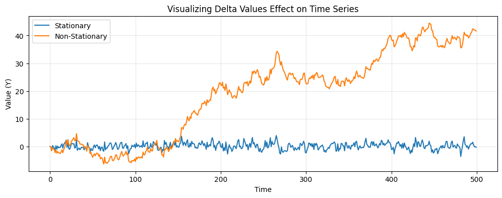

# Shared setup from the preceding lesson
import pandas as pd
import numpy as np
import matplotlib.pyplot as plt
import plotly.express as px
from statsmodels.tsa.seasonal import seasonal_decompose
from statsmodels.tsa.stattools import adfuller
from statsmodels.graphics.tsaplots import plot_acf, plot_pacf
plt.rcParams['figure.figsize'] = (12, 4)
plt.rcParams['axes.grid'] = True
plt.rcParams['grid.alpha'] = 0.3
%matplotlib inline
url = 'https://raw.githubusercontent.com/jbrownlee/Datasets/master/airline-passengers.csv'
df = pd.read_csv(url, parse_dates=['Month'])
df.columns = ['Date', 'Passengers']5 Stationarity: Rolling Statistics, ADF, and Transformations

Module 0 · Lesson 2 of 13 · Student edition
Estimated class time: 75–90 minutes
Source sequence: Original Day 1
Prerequisite: Lesson 1
5.1 Learning objectives
By the end of this lesson, you should be able to:
- Use rolling statistics to diagnose changes in mean and variance.
- Interpret an Augmented Dickey–Fuller test.
- Apply log and differencing transformations for stationarity.
5.2 Setup for this lesson
This cell recreates the data and completed prerequisites from earlier lessons, so this notebook can be run in a fresh kernel.
5.3 Part 3 — Rolling Statistics
5.3.1 What is stationarity?
A time series is stationary if its statistical properties — especially its mean and variance — do not change over time. Many forecasting models assume stationarity, so diagnosing it is a critical first step.
One visual tool: compute a rolling mean and rolling standard deviation using a sliding window. If the series is stationary, both should be roughly flat over time.
5.3.2 3.1 Compute and plot rolling statistics
We use a window of 12 months so seasonal effects are averaged out, giving a cleaner view of the underlying trend and variance.
💡 Syntax reminder:
series.rolling(window=n).mean()computes the mean of the lastnobservations at each time step..std()does the same for standard deviation.
# FILL IN: compute 12-month rolling mean and standard deviation
rolling_mean = df['Passengers'].rolling(window=???).mean()
rolling_std = df['Passengers'].rolling(window=???).std()
fig, axes = plt.subplots(2, 1, figsize=(12, 6), sharex=True)
# Top panel: original + rolling mean
axes[0].plot(df['Passengers'], label='Original', color='steelblue', alpha=0.7)
axes[0].plot(rolling_mean, label='12-Month Rolling Mean', color='crimson', linewidth=2)
axes[0].set_title('Rolling Mean')
axes[0].legend()
# Bottom panel: rolling std
axes[1].plot(rolling_std, label='12-Month Rolling Std', color='darkorange', linewidth=2)
axes[1].set_title('Rolling Standard Deviation')
axes[1].legend()
plt.tight_layout()
plt.show()5.3.3 ✏️ Written Response 3.1
Is the rolling mean flat or does it have a clear direction? What does this imply about stationarity?
Is the rolling standard deviation flat or does it change over time?
Based on these plots alone, would you call this series stationary? Justify your answer.
What happens if the window length varies for the mean and the standard deviation? In groups of 2 or 3, using the dividir y confluir strategy
YOUR ANSWER:
5.4 Part 4 — Formal Stationarity Test: Augmented Dickey-Fuller
Visual inspection is useful, but we can also use a statistical test.
The Augmented Dickey-Fuller (ADF) test tests the following hypotheses:
- H₀ (null): The series has a unit root → it is non-stationary
- H₁ (alternative): The series is stationary
| p-value | Conclusion |
|---|---|
| p < 0.05 | Reject H₀ → series is stationary |
| p ≥ 0.05 | Fail to reject H₀ → series is likely non-stationary |
5.4.1 4.1 Run the ADF test on the original series
# Running ADF test and interpreting
adfuller(df['Passengers'].dropna())# Converting result to a function in python
def run_adf(series, label='Series'):
"""Run the ADF test and print a readable summary."""
...
...
run_adf(df['Passengers'], label='Original Series')5.4.2 4.2 Apply a log transform, then first-difference
Two common transformations to achieve stationarity:
- Log transform → stabilizes growing variance (compresses large values)
- First difference → removes a linear trend by computing change from one step to the next
💡 Syntax reminder:
np.log(series)takes the natural logarithm.series.diff()computesx[t] - x[t-1]for each time step.
# Step 1: log transform
df['Log_Passengers'] = ???
# FILL IN: first-difference the log series
df['Log_Diff'] = ???
# Run ADF on both
run_adf(df['Log_Passengers'], label='Log-Transformed Series')
run_adf(df['Log_Diff'], label='Log-Differenced Series')# Visualize the two transformed series
fig, axes = plt.subplots(2, 1, figsize=(12, 6), sharex=True)
axes[0].plot(df['Log_Passengers'], color='steelblue')
axes[0].set_title('Log-Transformed Passengers')
# FILL IN: plot the log-differenced series
...
...
plt.tight_layout()
plt.show()5.4.3 ✏️ Written Response 4
- What did the ADF test say about the original series? What was the p-value?
- After log-differencing, what did the ADF test conclude? What changed visually?
- In your own words, why might a forecasting model perform better on a stationary series than on a non-stationary one?
YOUR ANSWER:
# The effect of delta
# create a simulation to quantify the difference of delta=0 with delta<0
np.random.seed(22)
n_steps = 500
# initialize arrays
y_stat = np.zeros(n_steps)
y_non_stat = np.zeros(n_steps)# generate the data
for t in range(1, n_steps):
# define the noise
epsilon = np.random.normal()
y_stat[t] = 0.5 * y_stat[t-1] + epsilon
y_non_stat[t] = 1 * y_non_stat[t-1] + epsilonplt.plot(y_stat, label = "Stationary")
plt.plot(y_non_stat, label = "Non-Stationary")
plt.title("Visualizing Delta Values Effect on Time Series")
plt.xlabel("Time")
plt.ylabel("Value (Y)")
plt.legend()